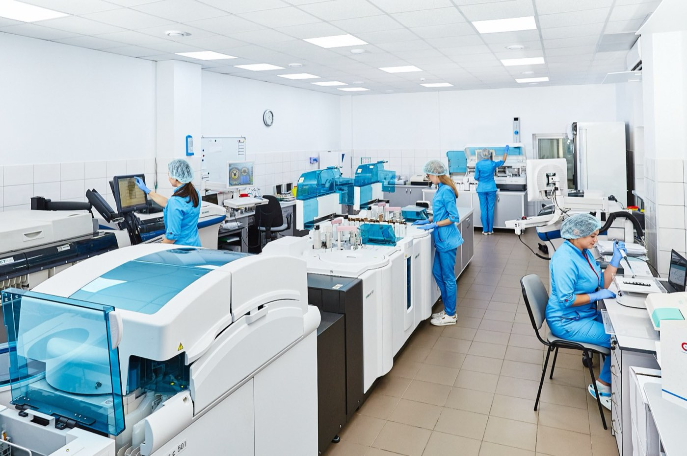
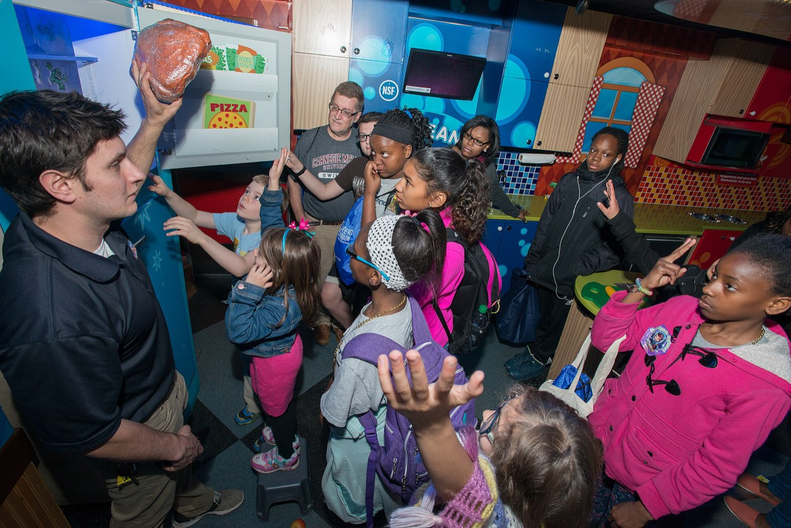
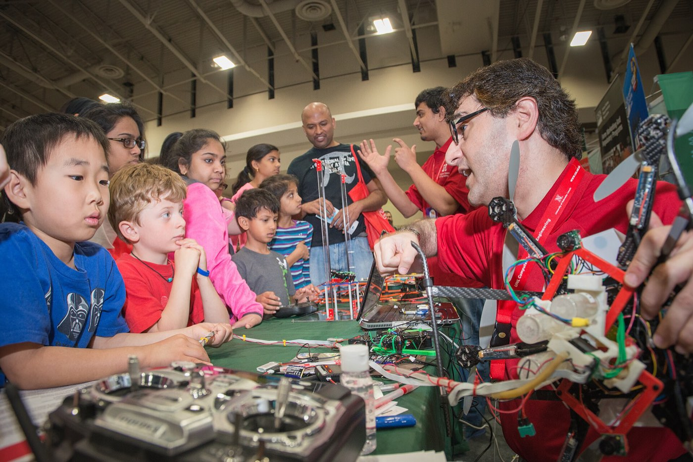
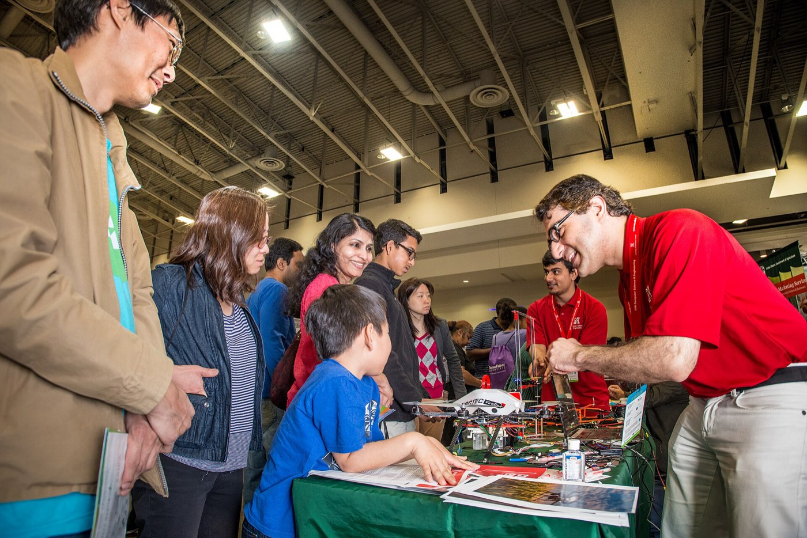
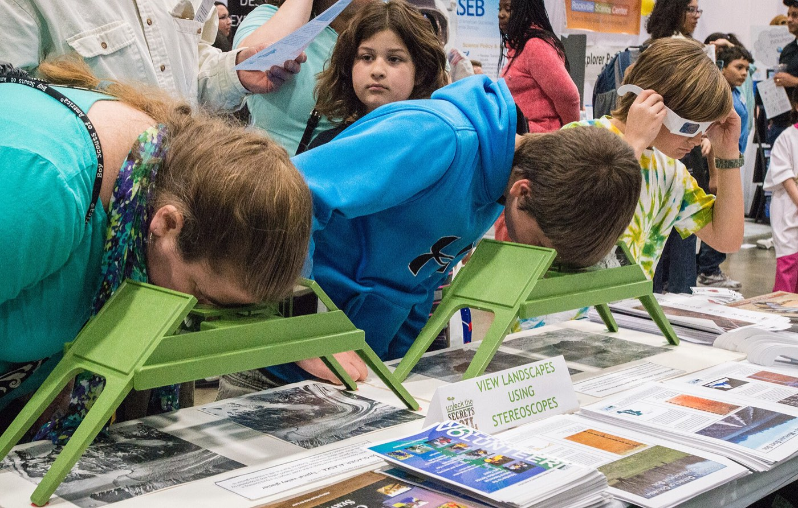
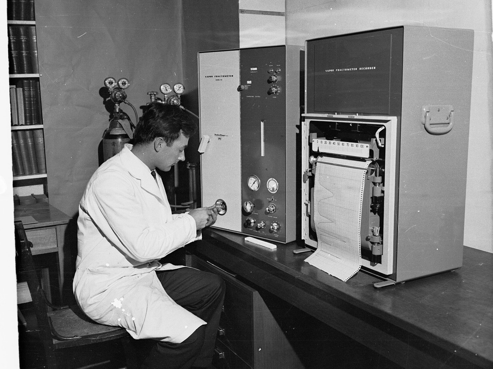

INSCIENCE Conference
Найбільша науково-популярна та deep tech конференція в Україні. Пʼята конференція відбулася 13–14 червня 2026 року в Києві.
- 1 500+
- учасників
- 50+
- спікерів
- 15+
- країн
- 60+
- стартапів і розробок

Робимо
науку
видимою.
Громадська організація, яка з 2018 року популяризує науку і доказову медицину та робить українських вчених і лікарів видимими.
Ми популяризуємо науку і доказову медицину та підвищує їхню цінність для суспільства, бізнесу та держави. Ми робимо українських вчених та лікарів/ок видимими і розвиваємо критичне мислення через науковий підхід до пізнання світу.
Найбільша науково-популярна та deep tech конференція в Україні. Пʼята конференція відбулася 13–14 червня 2026 року в Києві.
Платформа доказової інформації про здоровʼя: гайди разом із МОЗ і два подкасти.
До $10 000 на дослідження для команд під керівництвом жінок.

STEAM-події для дітей у Харкові, Миколаєві, Запоріжжі, Херсоні та Одесі, а також для дітей ветеранів у Києві.

Безоплатні зустрічі з лікарями про профілактику серцево-судинних захворювань.
Допомагає науковцям і бізнесу разом створювати наукоємні технології.

Безплатний курс із 12 вебінарів для освітян; з 2025 року — навчання вчителів у 10 громадах.

Профорієнтаційні зустрічі підлітків із науковцями та науковицями, за підтримки МОН.


Засновниці організації продовжать працювати з командою в новій ролі — стратегічно, з фокусом на розвиток і партнерства.

Два дні лекцій, дискусій і нетворкінгу з дослідниками з України та світу. Кількість місць обмежена.

Дослідниці з восьми міст пройдуть менторську програму й підготують власні науково-популярні проєкти.

Цієї осені експериментальні уроки з фізики та біології пройдуть у 40 школах по всій країні.

Щотижня — розмова з лікарем або дослідницею про те, що справді працює, а що ні.

Безкоштовні консультації, скринінги й лекції від медиків — для всіх охочих.
 Пʼята INSCIENCE Conference: 1 500+ учасників і 60+ стартапів у Києві
(нова вкладка)
Пʼята INSCIENCE Conference: 1 500+ учасників і 60+ стартапів у Києві
(нова вкладка)
 INSCIENCE Business: як науковці й бізнес разом створюють наукоємні технології
(нова вкладка)
INSCIENCE Business: як науковці й бізнес разом створюють наукоємні технології
(нова вкладка)
 Science Kids: STEAM-події для дітей у Харкові, Миколаєві, Запоріжжі, Херсоні та Одесі
(нова вкладка)
Science Kids: STEAM-події для дітей у Харкові, Миколаєві, Запоріжжі, Херсоні та Одесі
(нова вкладка)
 Women Led Science: до $10 000 на дослідження для команд під керівництвом жінок
(нова вкладка)
Women Led Science: до $10 000 на дослідження для команд під керівництвом жінок
(нова вкладка)
 Осередки здоровʼя: безоплатні зустрічі з лікарями у прифронтових містах
(нова вкладка)
Осередки здоровʼя: безоплатні зустрічі з лікарями у прифронтових містах
(нова вкладка)
 Як INSCIENCE робить українських вчених і лікарів видимими
(нова вкладка)
Як INSCIENCE робить українських вчених і лікарів видимими
(нова вкладка)


Ваш внесок стає науковими подіями для дітей, грантами для науковиць і доказовою інформацією про здоровʼя.
Підтримати